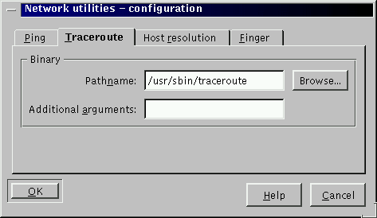

Next Previous Table of Contents

You can configure the pathname of the command used by KDE network
utilities if you don't want the command found in the
PATH variable to be used or if the command in not found the
the PATH. This can be done in the Edit ->
Preferences... menu. The GNU/Debian users will put the traceroute's
command to /usr/sbin/traceroute as normal users don't have
this directory in their path.
The same dialog box allows you to specify arguments to the program.
For example, on Sun Solaris computers, you can add -s as
argument for the ping command.
For the host resolution tab, you will have to choose the type of the
underlying command used, host or nslookup.
You can disable a command by editing the configuration file (by hand) and in
the corresponding group, just modify to read enable = 0.
Next Previous Table of Contents